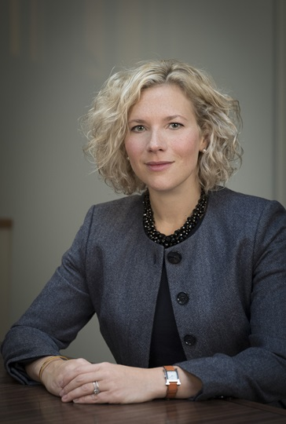

Kathryn Arnot Drummond

"She is nothing short of brilliant - she's extremely organised and methodical, and provides clear, strategic advice."
"Exceptionally good and very hard-working." "She has a lovely manner in court."
"Kathryn has a really broad range of experience."
"She is hard-working, collaborative, supportive and is a real team player."
"Kathryn provides legal advice which is informed by pertinent strategic and commercial considerations." "She is details-focused."
Chambers & Partners
"She is an extraordinarily persuasive advocate which is enhanced by charismatic presence that dominates the room.
Kathryn is very approachable and provides clear, practical, robust advice.
Although Kathryn is incredibly bright and quickly gets to the heart of any issue, she is also able to explain the matter in a clear digestible way that makes her advice both indispensable and user friendly.”
Legal 500 (Business and Regulatory Crime (including Global Investigations))
Advocacy
- An accomplished criminal court advocate, experienced in jury trial and appellate work, Kathryn has acted as both leading and junior counsel in a number of financial crime and serious general criminal cases. Her recent instructions include cases investigated and prosecuted by the SFO, HMRC and private prosecutors.
- Kathryn undertakes specialist prosecution cases where there is a novel or complex question of law. Her recent cases include gross negligence manslaughter. She is an appointed panel member to the CPS Specialist Fraud Panel and General Crime Panels.
Advisory (Individuals)
- Kathryn has a substantial advisory practice advising individuals pre-charge on their personal liability to criminal and regulatory proceedings.
- She is often asked to advise on novel areas of criminal law. Her recent instructions include questions relating to sanctions, LPP and whether to bring a private prosecution.
- She is experienced advising potential witnesses working within corporates under investigation. She advises at all stages of an investigation and is well-versed with the opportunities to co-operate with investigations. Similarly, she is experienced in managing a strategic case in the face of the use of aggressive investigatory powers.
Advisory (Corporates)
- Nominated for Corporate Crime Junior of the Year 2022, Legal 500
- Kathryn provides strategic advice to a range of corporates on white collar, regulatory and collateral civil fraud investigations. Her recent instructions include advising a global bank, international mining company, law firm and a range of smaller companies. She is experienced advising Boards, senior management and in-house legal teams and working effectively and sensitively with the corporate to manage often conflicting legal /regulatory obligations and personnel issues. She has worked with PR teams to prepare appropriate press releases and advises on legal privilege and market sensitive/ insider information.
- Kathryn is experienced and comfortable working in parallel with teams of foreign lawyers and commercial /litigation firms including magic circle. Kathryn has worked on cases involving parallel criminal, civil or regulatory proceedings in the USA (DOJ and SEC) and Luxembourg and has experience of working on cases where the underlying dishonest conduct / bribery took place outside of jurisdiction in Russia, China, and Africa (Tanzania, Nigeria, Kenya and Mozambique).
- Kathryn is often instructed when the issue is first identified to offer immediate strategic advice and support for a corporate where an internal investigation is necessary. She has conducted individual-issue internal investigations alone and worked as part of a team to scope the corporate’s criminal and regulatory exposure. Kathryn advises on self-reporting, co-operating with prosecuting authorities, managing regulatory obligations and complying with obligations arising from insolvency service investigations.
Recent and Ongoing Cases
- Junior instructed alone to defend a private prosecution for fraud.
- Instructed to act for founder and CEO of an investment fund.
- Advised a global investment bank in relation to a regulatory investigation in the UK whilst parallel proceedings were ongoing in the USA. Kathryn was retained to assist the bank with the collateral civil fraud litigation.
- Advising a law firm in relation to Anti-Money Laundering issues.
- Represented the Chief Operating Officer of a PLC, charged by the SFO alongside the company’s former CEO with fraud and money laundering offences.
- Advised a publicly listed company in an extractive industry in relation to multi-jurisdictional corporate criminal liability.
- Leading counsel in a multi-handed company fraud trial involving complex legal argument.
- Instructed in relation to a high profile SFO investigation into allegations of multi-jurisdictional bribery. Kathryn was one of two lawyers who attended the section 2 interview.
- Instructed pre-charge to advise a former CEO of a hedge fund in regard to alleged offences of fraud and money laundering.
- Advised a spread betting company on personal account dealing/insider dealing.
- Represented a film producer against charges of conspiracy to cheat the revenue and fraudulent claiming of film tax credits.
- Advised the directors of a pharmaceutical company under investigation for the commission of offences under the Misuse of Drugs Act as a result of wholesale foreign export on strategy and approach to interview.
Professional or other appointments:
Master of the Bench, Inner Temple [2019]
Fraud Lawyers Association [committee member]
Private Prosecutors Association